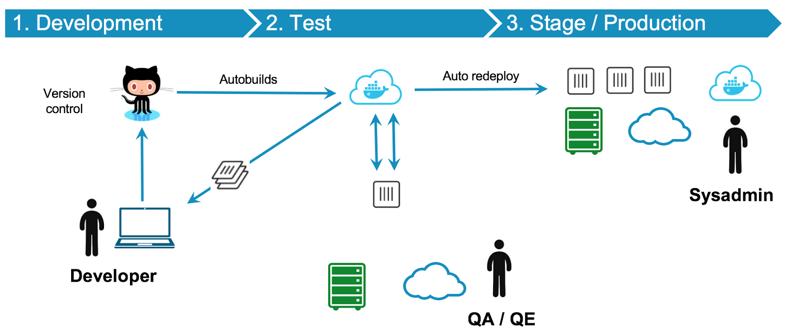
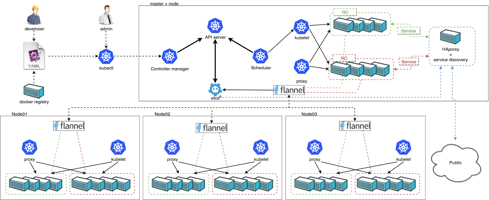
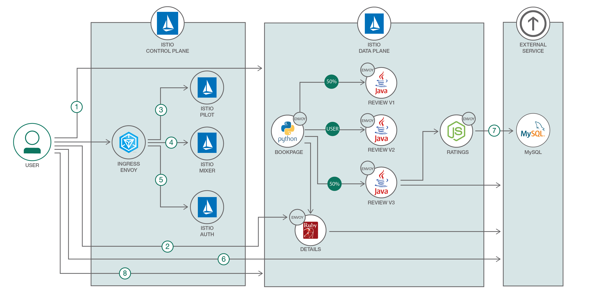
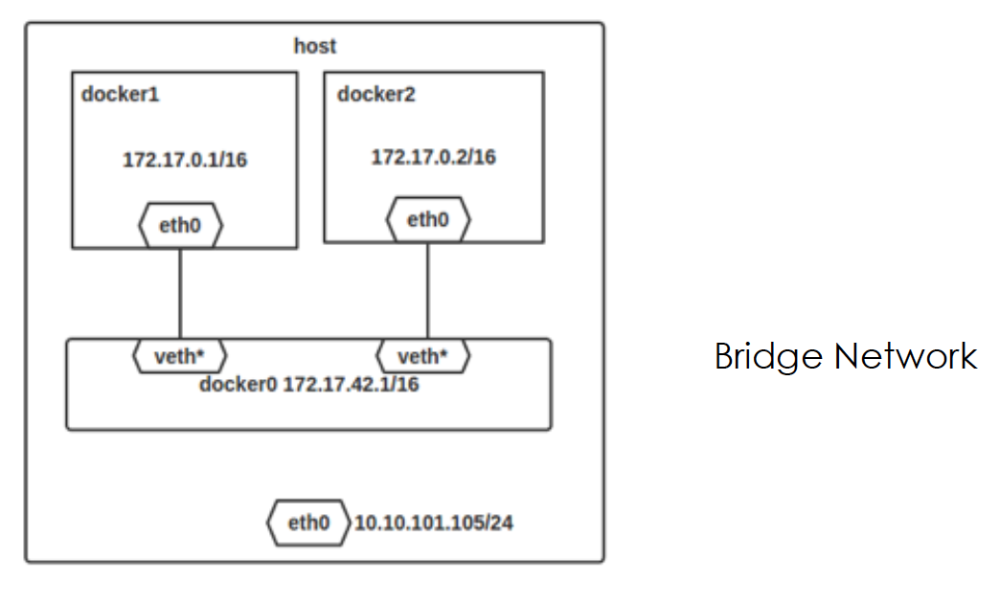
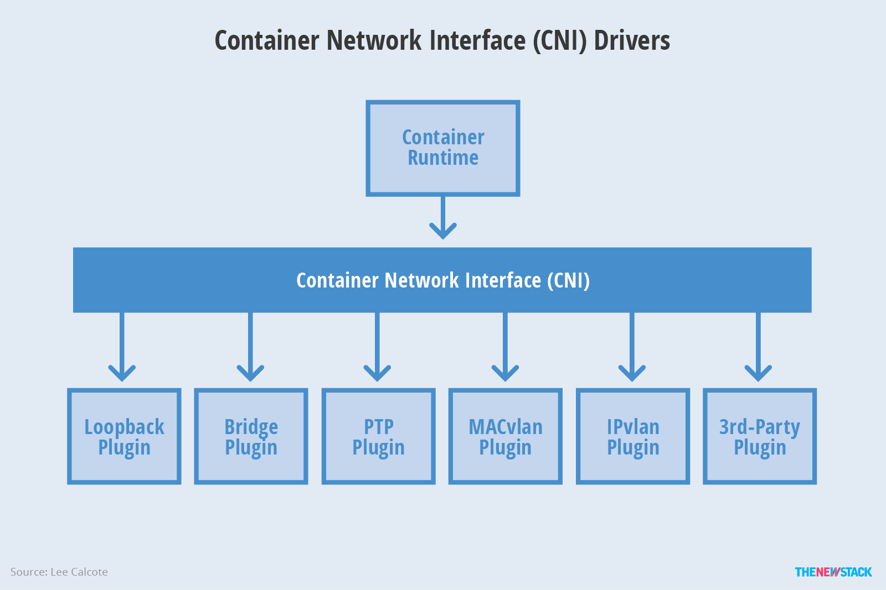
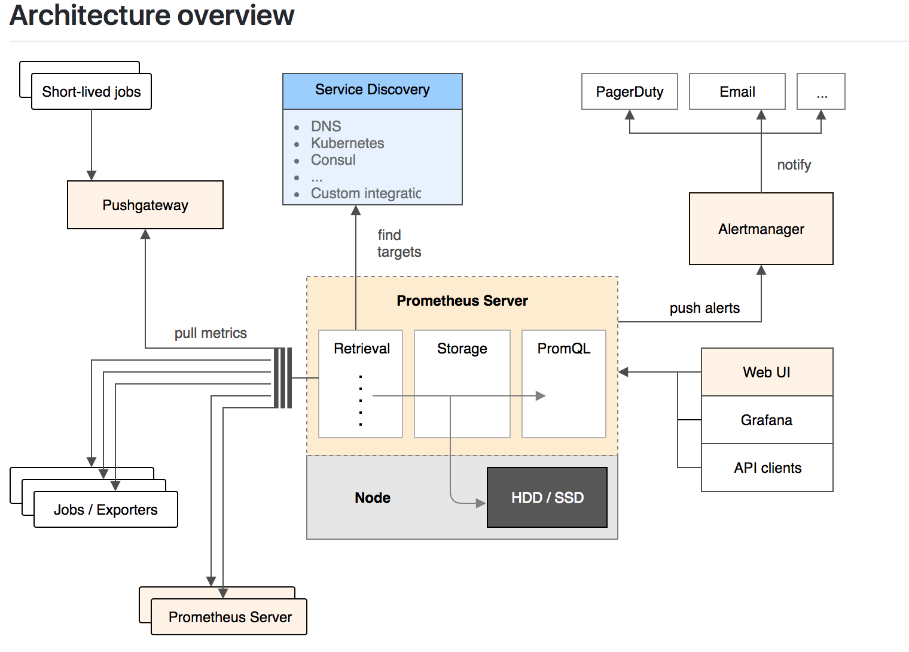
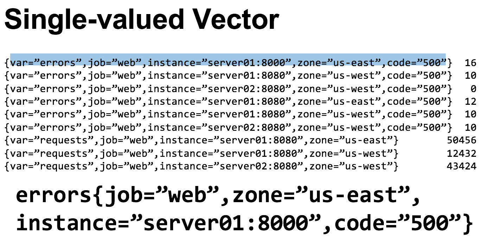

01 导读：Docker 核心技术预览
2017年3月 Docker 官方发布消息，原 SAP 高管 Steve Singh 接任 Ben Golub 成为新的首席执行官。这是一个特别时期，经过四年的长足发展，Docker 已经成为一家高速发展的云计算开源技术领导品牌，但是其商业模式至今不太明朗。
Steve 的商业经验至少可以说是当前最合适成为 Docker 领军人物的人选，在距离 IPO 上市近在咫尺的路上，本文期望通过深入预览 Docker 核心技术的概念，让大家全面了解 Docker 技术对云计算发展的深远意义。
背景
由 PaaS 到 Container
2013年2月，前 Gluster 的 CEO，Ben Golub 和 dotCloud 的 CEO，Solomon Hykes 坐在一起聊天时，Solomon 谈到想把 dotCloud 内部使用的 Container 容器技术开源出来，并围绕这项技术开一家新公司并提供商业技术支持。
这一想法源于28岁的 Solomon 在研发 dotCloud 的 PaaS 云平台时发现的机会。通过使用 Ubuntu 社区的 LXC（Linux Container）技术可以便捷地构建应用环境镜像并发布到主机平台运行。这种容器技术可以把开发者从日常部署升级应用环境配置的繁杂工作中解脱出来。事实上，自从进入 DevOps 理念之后，开发团队迫切需要从各种混乱的部署环境中解脱出来。他们越深入交谈，越觉得这是一次云计算技术的变革。不久之后在2013年3月 Docker 0.1发布，从此拉开了基于云计算容器技术的变革序幕。
Docker 简介
Docker 是 Docker Inc 公司开源的一项基于 Ubuntu LXC 技术之上构建的应用打包运行时引擎，源代码托管在 GitHub 上，完全基于 Go 语言开发并遵守 Apache License 2.0 协议开源。 Docker 在2014年6月召开的 DockerCon 2014 技术大会上，吸引了 IBM、Google、RedHat 等业界知名公司的关注和技术支持。无论是从 GitHub 上的代码活跃度，还是开源巨头红帽宣布在 RHEL7 中正式支持 Docker 技术，都可以说明 Docker 技术是一项创新型的技术解决方案，就连 Google 公司的 Compute Engine 也很快支持 Docker 在其之上运行。国内 BATJ（百度云、阿里云、腾讯云、京东云）也相继推出容器服务紧追云计算发展趋势。
Docker 技术解决以下问题：
- 复杂的环境配置管理：从各种 OS 环境到各种中间件环境以及各种应用环境。
在软件行业中任何应用要做到成功发布，开发团队需要关心的东西太多且难于统一管理，这个问题普遍存在并需要直接面对。Docker 技术旨在简化部署多种应用实例环境依赖，如 Web 应用、后台应用、数据库应用、大数据应用（例如Hadoop集群）、消息队列（例如Kafka）等等都可以打包成一个镜像部署。如图所示：
- 云计算时代的到来：AWS 的成功，引导开发者将应用转移到云上，解决了硬件管理的问题，然而软件配置和管理相关的问题依然存在（AWS CloudFormation 是这个方向的业界标准，样例模板可参考这里）。Docker 的出现正好能帮助软件开发者开阔思路，尝试新的软件管理方法来解决这个问题。
- 虚拟化手段的变化：云时代采用标配硬件来降低成本，采用虚拟化手段来满足用户按需分配的资源需求以及保证可用性和隔离性。然而无论是 KVM 还是 Xen，在 Docker 看来都在浪费资源，因为用户需要的是高效运行环境而非 OS，GuestOS 既浪费资源又难于管理，轻量级的 LXC 更加灵活和快速。如图所示：
- 容器技术的便携性：LXC 在 Linux 2.6 的 Kernel 里就已经存在了，但是其设计之初并非为云计算考虑的，缺少标准化的描述手段和容器的可便携性，决定其构建出的环境难于分发和标准化管理（相对于 KVM 之类 image 和 snapshot 的概念）。Docker 就在这个问题上做出了实质性的创新方法。
Docker 的 Hello World
以 Fedora25 作为主机为例，直接安装
$ sudo dnf install docker-ce
启动 Docker 后台 Daemon：
$ sudo systemctl start docker
跑第一个 Hello World 容器实例：
$ sudo docker run hello-world
随后可以看到在命令行控制台中打印出经典的Hello World 字符串。
核心技术预览
Docker 核心是一个操作系统级虚拟化方法，理解起来可能并不像 VM 那样直观。我们从虚拟化方法的四个方面：隔离性、可配额/可度量、便携性、安全性来详细介绍 Docker 的技术细节。
隔离性：Linux Namespace(ns)
每个用户实例之间相互隔离，互不影响。一般的硬件虚拟化方法给出的方法是 VM，而 LXC 给出的方法是 container，更细一点讲就是 kernel namespace。其中 pid、net、ipc、mnt、uts、user 等 namespace 将 container 的进程、网络、消息、文件系统、UTS（“UNIX Time-sharing System”）和用户空间隔离开。
pid namespace
不同用户的进程就是通过 pid namespace 隔离开的，且不同 namespace 中可以有相同 pid。所有的 LXC 进程在 Docker中的父进程为 Docker 进程，每个 lxc 进程具有不同的 namespace。同时由于允许嵌套，因此可以很方便地实现 Docker in Docker。
net namespace
有了 pid namespace，每个 namespace 中的 pid 能够相互隔离，但是网络端口还是共享 host 的端口。网络隔离是通过 net namespace 实现的，每个 net namespace 有独立的 network devices，IP addresses，IP routing tables，/proc/net 目录。这样每个 container 的网络就能隔离开来。Docker 默认采用 veth 的方式将 container 中的虚拟网卡同 host 上的一个 docker bridge：docker0连接在一起。
ipc namespace
container 中进程交互还是采用 linux 常见的进程间交互方法（interprocess communication - IPC），包括常见的信号量、消息队列和共享内存。然而同 VM 不同的是，container 的进程间交互实际上还是 host 上具有相同 pid namespace 中的进程间交互，因此需要在 IPC 资源申请时加入 namespace 信息——每个 IPC 资源有一个唯一的32位 ID。
mnt namespace
类似 chroot，将一个进程放到一个特定的目录执行。mnt namespace 允许不同 namespace 的进程看到的文件结构不同，这样每个 namespace 中的进程所看到的文件目录就被隔离开了。同 chroot 不同，每个 namespace 中的 container 在/proc/mounts 的信息只包含所在 namespace 的 mount point。
uts namespace
UTS（“UNIX Time-sharing System”）namespace 允许每个 container 拥有独立的 hostname 和 domain name，使其在网络上可以被视作一个独立的节点而非 Host 上的一个进程。
user namespace
每个 container 可以有不同的 user 和 group id，也就是说可以在 container 内部用 container 内部的用户执行程序而非 Host 上的用户。
可配额/可度量 Control Groups (cgroups)
cgroups 实现了对资源的配额和度量。 cgroups 的使用非常简单，提供类似文件的接口，在/cgroup 目录下新建一个文件夹即可新建一个 group，在此文件夹中新建 task 文件，并将pid 写入该文件，即可实现对该进程的资源控制。groups 可以限制 blkio、cpu、cpuacct、cpuset、devices、freezer、memory、net_cls、ns 九大子系统的资源，以下是每个子系统的详细说明：
- 有序列表 blkio 这个子系统设置限制每个块设备的输入输出控制。例如：磁盘，光盘以及 usb 等等。
- cpu 这个子系统使用调度程序为 cgroup 任务提供 cpu 的访问。
- cpuacct 产生 cgroup 任务的 cpu 资源报告。
- cpuset 如果是多核心的 cpu，这个子系统会为 cgroup 任务分配单独的 cpu 和内存。
- devices 允许或拒绝 cgroup 任务对设备的访问。
- freezer 暂停和恢复 cgroup 任务。
- memory 设置每个 cgroup 的内存限制以及产生内存资源报告。
- net_cls 标记每个网络包以供 cgroup 方便使用。
- ns 名称空间子系统。
以上九个子系统之间也存在着一定的关系。详情请参阅官方文档。
便携性
AUFS（AnotherUnionFS）是一种 Union FS，简单来说就是支持将不同目录挂载到同一个虚拟文件系统下（unite several directories into a single virtual filesystem）的文件系统。更进一步地理解，AUFS 支持为每一个成员目录（类似Git Branch）设定 readonly、readwrite 和 whiteout-able 权限。同时 AUFS 里有一个类似分层的概念，对 readonly 权限的 branch 可以逻辑上进行修改（增量地，不影响 readonly 部分的）。
通常 Union FS 有两个用途，一方面可以实现不借助 LVM、RAID 将多个 disk 挂到同一个目录下；另一个更常用的就是将一个 readonly 的 branch 和一个 writeable 的 branch 联合在一起，Live CD 正是基于此方法可以允许在 OS image 不变的基础上允许用户在其上进行一些写操作。Docker 在 AUFS 上构建的 container image 也正是如此，接下来我们从启动 container 中的 linux 为例来介绍 Docker 对 AUFS 特性的运用。
典型的启动Linux运行需要两个FS：bootfs + rootfs
bootfs（boot file system）主要包含 bootloader 和 kernel，bootloader 主要是引导加载 kernel，当 boot 成功后 kernel 被加载到内存中后 bootfs 就被 umount 了。 rootfs（root file system）包含的就是典型 Linux 系统中的/dev，/proc，/bin，/etc 等标准目录和文件。
对于不同的 linux 发行版，bootfs 基本是一致的。但 rootfs 会有差别，因此不同的发行版可以公用 bootfs。如下图：
典型的 Linux 在启动后，首先将 rootfs 设置为 readonly，进行一系列检查，然后将其切换为 “readwrite”供用户使用。在 Docker 中，初始化时也是将 rootfs 以 readonly 方式加载并检查，然而接下来利用 union mount 的方式将一个 readwrite 文件系统挂载在 readonly 的 rootfs 之上，并且允许再次将下层的 FS（file system）设定为 readonly，并且向上叠加，这样一组 readonly 和一个 writeable 的结构构成一个 container 的运行时态，每一个 FS 被称作一个 FS 层。如下图：
得益于 AUFS 的特性，每一个对 readonly 层文件/目录的修改都只会存在于上层的 writeable 层中。这样由于不存在竞争，多个 container 可以共享 readonly 的 FS 层。所以 Docker 将 readonly 的 FS 层称作“image”-——对于 container 而言整个 rootfs 都是 read-write 的，但事实上所有的修改都写入最上层的 writeable 层中，image 不保存用户状态，只用于模板、新建和复制使用。
上层的 image 依赖下层的 image，因此 Docker 中把下层的 image 称作父 image，没有父 image 的 image 称作 base image。因此想要从一个 image 启动一个 container，Docker 会先加载这个 image 和依赖的父 images 以及 base image，用户的进程运行在 writeable 的 layer 中。所有 parent image 中的数据信息以及 ID、网络和 lxc 管理的资源限制等具体 container 的配置，构成一个 Docker 概念上的 container。如下图：
安全性：AppArmor，SELinux，GRSEC
安全永远是相对的，这里有三个方面可以考虑Docker 的安全特性：
- 由 kernel namespaces 和 cgroups 实现的 Linux 系统固有的安全标准；
- Docker Deamon 的安全接口；
- Linux 本身的安全加固解决方案，例如 AppArmor，SELinux；
由于安全属于非常具体的技术，这里不在赘述，请直接参阅 Docker 官方文档。
总结
Docker 社区一直在面对技术挑战，从容地给出自己的解决方案。云计算发展至今，有很多重要的问题没有得到妥善解决，Docker 正在尝试让主流厂商接受并应用它的解决方案。至此，以上 Docker 技术的预览到此告一段落，笔者也希望读者能结合自己的实际情况，尝试使用 Docker 技术。只有在亲自体会的基础之上，Docker 技术才会产生更大的商业价值。
02 Docker 命令行实践
Docker 官方为了让用户快速上手，提供了一个交互式教程，旨在帮助用户掌握 Docker 命令行的使用方法。但是由于 Docker 技术的快速发展，此交互式教程已经无法满足用户的实际使用需求，所以让我们一起开始一次真正的命令行学习之旅。
首先，Docker 的命令清单可以通过运行 docker ，或者 docker help 命令得到： $ sudo docker。
在 Docker 容器技术不断演化的过程中，Docker 的子命令已经达到41个之多，其中核心子命令（例如：run）还会有复杂的参数配置。笔者通过结合功能和应用场景方面的考虑，把命令行划分为4个部分，方便我们快速概览 Docker 命令行的组成结构：
| 功能划分 | 命令 |
|---|---|
| 环境信息相关 | 1. info 2. version |
| 系统运维相关 | 1. attach 2. build 3. commit 4. cp 5. diff 6. images 7. export/ import / save / load 8. inspect 9. kill 10. port 11. pause / unpause 12. ps 13. rm 14. rmi 15. run 16. start / stop / restart 17. tag 18. top 19.wait 20. rename 21.stats 22. update 23. exec 24.deploy 25.create |
| 日志信息相关 | 1. events 2. history 3. logs |
| Docker Hub服务相关 | 1. login/ logout 2. pull / push 3. search |
参数约定
单个字符的参数可以放在一起组合配置，例如：
docker run -t -i --name test busybox sh
可以用这样的方式等同：
docker run -ti --name test busybox sh
布尔值约定
Boolean 参数形式如：-d=false。注意，当你声明这个 Boolean 参数时，比如 docker run -d=true，它将直接把启动的 Container 挂起放在后台运行。
字符串和数字
参数如 --name=“” 定义一个字符串，它仅能被定义一次。同类型的如-c=0 定义一个数字，它也只能被定义一次。
后台进程
Docker 后台进程是一个常驻后台的系统进程，目前已经从 Docker 程序分离处理一份独立的程序 dockerd 来执行守护后台进程。这个后台进程是用来启动容器引擎的，使用 dockerd --help 可以得到更详细的功能参数配置。如下图：
Usage: dockerd COMMAND
A self-sufficient runtime for containers.
Options:
--add-runtime runtime Register an additional OCI compatible runtime (default [])
--allow-nondistributable-artifacts list Push nondistributable artifacts to specified registries (default [])
--api-cors-header string Set CORS headers in the Engine API
--authorization-plugin list Authorization plugins to load (default [])
--bip string Specify network bridge IP
-b, --bridge string Attach containers to a network bridge
--cgroup-parent string Set parent cgroup for all containers
--cluster-advertise string Address or interface name to advertise
--cluster-store string URL of the distributed storage backend
--cluster-store-opt map Set cluster store options (default map[])
--config-file string Daemon configuration file (default "/etc/docker/daemon.json")
--containerd string Path to containerd socket
--cpu-rt-period int Limit the CPU real-time period in microseconds
--cpu-rt-runtime int Limit the CPU real-time runtime in microseconds
--data-root string Root directory of persistent Docker state (default "/var/lib/docker")
-D, --debug Enable debug mode
--default-gateway ip Container default gateway IPv4 address
--default-gateway-v6 ip Container default gateway IPv6 address
--default-runtime string Default OCI runtime for containers (default "runc")
--default-ulimit ulimit Default ulimits for containers (default [])
--disable-legacy-registry Disable contacting legacy registries (default true)
--dns list DNS server to use (default [])
--dns-opt list DNS options to use (default [])
--dns-search list DNS search domains to use (default [])
--exec-opt list Runtime execution options (default [])
--exec-root string Root directory for execution state files (default "/var/run/docker")
--experimental Enable experimental features
--fixed-cidr string IPv4 subnet for fixed IPs
--fixed-cidr-v6 string IPv6 subnet for fixed IPs
-G, --group string Group for the unix socket (default "docker")
--help Print usage
-H, --host list Daemon socket(s) to connect to (default [])
--icc Enable inter-container communication (default true)
--init Run an init in the container to forward signals and reap processes
--init-path string Path to the docker-init binary
--insecure-registry list Enable insecure registry communication (default [])
--ip ip Default IP when binding container ports (default 0.0.0.0)
--ip-forward Enable net.ipv4.ip_forward (default true)
--ip-masq Enable IP masquerading (default true)
--iptables Enable addition of iptables rules (default true)
--ipv6 Enable IPv6 networking
--label list Set key=value labels to the daemon (default [])
--live-restore Enable live restore of docker when containers are still running
--log-driver string Default driver for container logs (default "json-file")
-l, --log-level string Set the logging level ("debug", "info", "warn", "error", "fatal") (default "info")
--log-opt map Default log driver options for containers (default map[])
--max-concurrent-downloads int Set the max concurrent downloads for each pull (default 3)
--max-concurrent-uploads int Set the max concurrent uploads for each push (default 5)
--metrics-addr string Set default address and port to serve the metrics api on
--mtu int Set the containers network MTU
--no-new-privileges Set no-new-privileges by default for new containers
--oom-score-adjust int Set the oom_score_adj for the daemon (default -500)
-p, --pidfile string Path to use for daemon PID file (default "/var/run/docker.pid")
--raw-logs Full timestamps without ANSI coloring
--registry-mirror list Preferred Docker registry mirror (default [])
--seccomp-profile string Path to seccomp profile
--selinux-enabled Enable selinux support
--shutdown-timeout int Set the default shutdown timeout (default 15)
-s, --storage-driver string Storage driver to use
--storage-opt list Storage driver options (default [])
--swarm-default-advertise-addr string Set default address or interface for swarm advertised address
--tls Use TLS; implied by --tlsverify
--tlscacert string Trust certs signed only by this CA (default "~/.docker/ca.pem")
--tlscert string Path to TLS certificate file (default "~/.docker/cert.pem")
--tlskey string Path to TLS key file (default ~/.docker/key.pem")
--tlsverify Use TLS and verify the remote
--userland-proxy Use userland proxy for loopback traffic (default true)
--userland-proxy-path string Path to the userland proxy binary
--userns-remap string User/Group setting for user namespaces
-v, --version Print version information and qui
Docker 后台进程参数清单如下表：
| 参数 | 解释 |
|---|---|
| --add-runtime runtime | 选择容器运行时引擎，默认 containerd |
| --allow-nondistributable-artifacts list | 因为类如 window base image 包含版权限制，所以配置指定的私有镜像仓库，可以帮助应用正常发布 |
| --api-cors-header string | 提供跨站 API 请求自定义包头信息 |
| --authorization-plugin list | 认证插件配置 |
| --bip string | 配置网桥地址 |
| -b, --bridge string | 连接网桥 |
| --cgroup-parent string | 配置容器的父 cgroup 信息 |
| --cluster-advertise string | 集群广播网络地址 |
| --cluster-store string | 集群存储支持 |
| --cluster-store-opt map | 集群存储参数配置 |
| --config-file string | 后台引擎参数配置文件 |
| --containerd string | 容器引擎实例网络套接字路径 |
| --cpu-rt-period int | 限制 CPU 间隔频率（微秒级别） |
| --cpu-rt-runtime int | 限制 CPU 运行时频率（微秒级别） |
| --data-root string | 容器引擎数据根目录地址 |
| -D, --debug | 调试信息 |
| --default-gateway ip | 容器默认 IPv4 网络网关 |
| --default-gateway-v6 ip | 容器默认 IPv6 网络网关 |
| --default-runtime string | 容器运行时，默认 runc |
| --default-ulimit ulimit | 配置容器默认最大文件限制数，改善运行性能 |
| --disable-legacy-registry | 废弃老版本镜像仓库 |
| --dns list | DNS 服务地址 |
| --dns-opt list | DNS 服务参数 |
| --dns-search list | DNS服务查询域名配置 |
| --exec-opt list | 运行时执行参数 |
| --exec-root string | 运行时执行根目录地址 |
| --experimental | 启用实验性特性 |
| --fixed-cidr string | 固定 IPv4 网段 |
| --fixed-cidr-v6 string | 固定 IPv6 网段 |
| -G, --group string | 网络套接字所属组 |
| --help | 帮助信息 |
| -H, --host list | 后台进程连接地址 |
| --icc | 启用容器间的网络互联，默认启用 |
| --init | 在容器运行时启动一个 init 程序，来统一管理进程 |
| --init-path string | docker init 的路径地址 |
| --insecure-registry list | 非安全镜像仓库地址列表 |
| --ip ip | 默认容器绑定 IP 地址，默认 0.0.0.0 |
| --ip-forward | 启动 net.ipv4.ip_forward |
| --ip-masq | 启动IP混淆 |
| --iptables | 启动默认的iptable规则 |
| --ipv6 | 启动 IPv6 网络 |
| --label list | 配置键值对参数到引擎后台 |
| --live-restore | 启用容器热迁移特性 |
| --log-driver string | 日志驱动配置，默认 json-file |
| -l, --log-level string | 日志级别 |
| --log-opt map | 日志驱动参数 |
| --max-concurrent-downloads int | 每次 pull 的最大下载线程数 |
| --max-concurrent-uploads int | 每次 push 最大上传线程数 |
| --metrics-addr string | 监控地址 |
| --mtu int | 网络数据包 MTU 配置 |
| --no-new-privileges | 去掉 nonewprivs 权限 |
| --oom-score-adjust int | OOM 阈值配置 |
| -p, --pidfile string | 引擎后台进程文件地址 |
| --raw-logs | 无 ANSI 颜色的日志 |
| --registry-mirror list | 镜像仓库同步镜像地址 |
| --seccomp-profile string | seccomp 文件地址 |
| --selinux-enabled | 启用 selinux |
| --shutdown-timeout int | 默认停机超时时间，默认15 秒 |
| -s, --storage-driver string | 容器存储驱动 |
| --storage-opt list | 容器存储驱动参数 |
| --swarm-default-advertise-addr string | swarm 集群广播地址 |
| --tls | 使用 TLS 认证 |
| --tlscacert string | CA 文件地址 |
| --tlscert string | TLS 认证文件地址 |
| --tlskey string | TLS 私钥地址 |
| --tlsverify | 使用 TLS 认证 |
| --userland-proxy | 使用用户态 proxy 来路由 loopback 流量 |
| --userland-proxy-path string | 用户态 proxy 地址 |
| --userns-remap string | 用户命令空间的用户、用户组配置 |
| -v, --version | 版本 |
Docker 命令行探秘
环境信息相关
info
使用方法：docker info
例子：
[fedora@docker-devel-cli docker]$ sudo docker -D info
Containers: 0
Images: 32
Storage Driver: devicemapper
Pool Name: docker-252:1-130159-pool
Data file: /var/lib/docker/devicemapper/devicemapper/data
Metadata file: /var/lib/docker/devicemapper/devicemapper/metadata
Data Space Used: 1616.9 Mb
Data Space Total: 102400.0 Mb
Metadata Space Used: 2.4 Mb
Metadata Space Total: 2048.0 Mb
Execution Driver: native-0.2
Kernel Version: 3.11.10-301.fc20.x86_64
Debug mode (server): false
Debug mode (client): true
Fds: 11
Goroutines: 14
EventsListeners: 0
Init SHA1: 2c5adb59737b8a01fa3fb968519a43fe140bc9c9
Init Path: /usr/libexec/docker/dockerinit
Sockets: [fd://]
使用说明：
这个命令在开发者报告 Bug 时会非常有用，结合 docker vesion 一起，可以随时使用这个命令把本地的配置信息提供出来，方便 Docker 的开发者快速定位问题。
version
使用方法：docker version
使用说明：
显示 Docker 的版本号，API 版本号，Git commit，Docker 客户端和后台进程的 Go 版本号。
系统运维相关
attach
使用方法：docker attach [OPTIONS] CONTAINER
例子：
$ ID=$(sudo docker run -d ubuntu /usr/bin/top -b)
$ sudo docker attach $ID
top - 17:21:49 up 5:53, 0 users, load average: 0.63, 1.15, 0.78
Tasks: 1 total, 1 running, 0 sleeping, 0 stopped, 0 zombie
%Cpu(s): 1.0 us, 0.7 sy, 0.0 ni, 97.7 id, 0.7 wa, 0.0 hi, 0.0 si, 0.0 st
KiB Mem: 2051644 total, 723700 used, 1327944 free, 33032 buffers
KiB Swap: 0 total, 0 used, 0 free. 565836 cached Mem
PID USER PR NI VIRT RES SHR S %CPU %MEM TIME+ COMMAND
1 root 20 0 19748 1280 1008 R 0.0 0.1 0:00.04 top
$ sudo docker stop $ID
使用说明：
使用这个命令可以挂载正在后台运行的容器，在开发应用的过程中运用这个命令可以随时观察容器內进程的运行状况。开发者在开发应用的场景中，这个命令是一个非常有用的命令。
build
使用方法：docker build [OPTIONS] PATH | URL | -
例子：
$ docker build .
Uploading context 18.829 MB
Uploading context
Step 0 : FROM busybox
---> 769b9341d937
Step 1 : CMD echo Hello world
---> Using cache
---> 99cc1ad10469
Successfully built 99cc1ad10469
使用说明：
这个命令是从源码构建新 Image 的命令。因为 Image 是分层的，最关键的 Base Image 是如何构建的是用户比较关心的，Docker 官方文档给出了构建方法，请参考这里。
commit
使用方法：docker commit [OPTIONS] CONTAINER [REPOSITORY[:TAG]]
例子：
$ sudo docker ps
ID IMAGE COMMAND CREATED STATUS PORTS
c3f279d17e0a ubuntu:12.04 /bin/bash 7 days ago Up 25 hours
197387f1b436 ubuntu:12.04 /bin/bash 7 days ago Up 25 hours
$ docker commit c3f279d17e0a SvenDowideit/testimage:version3
f5283438590d
$ docker images | head
REPOSITORY TAG ID CREATED VIRTUAL SIZE
SvenDowideit/testimage version3 f5283438590d 16 seconds ago 335.7 MB
使用说明：
这个命令的用处在于把有修改的 container 提交成新的 Image，然后导出此 Imange 分发给其他场景中调试使用。Docker 官方的建议是，当你在调试完 Image 的问题后，应该写一个新的 Dockerfile 文件来维护此 Image。commit 命令仅是一个临时创建 Imange 的辅助命令。
cp
使用方法： cp CONTAINER:PATH HOSTPATH
使用说明：
使用 cp 可以把容器內的文件复制到 Host 主机上。这个命令在开发者开发应用的场景下，会需要把运行程序产生的结果复制出来的需求，在这个情况下就可以使用这个 cp 命令。
diff
使用方法：docker diff CONTAINER
例子：
$ sudo docker diff 7bb0e258aefe
C /dev
A /dev/kmsg
C /etc
A /etc/mtab
A /go
A /go/src
A /go/src/github.com
A /go/src/github.com/dotcloud
....
使用说明：
diff 会列出3种容器内文件状态变化（A - Add，D - Delete，C - Change）的列表清单。构建Image的过程中需要的调试指令。
images
使用方法：docker images [OPTIONS] [NAME]
例子：
$ sudo docker images | head
REPOSITORY TAG IMAGE ID CREATED VIRTUAL SIZE
<none> <none> 77af4d6b9913 19 hours ago 1.089 GB
committest latest b6fa739cedf5 19 hours ago 1.089 GB
<none> <none> 78a85c484f71 19 hours ago 1.089 GB
$ docker latest 30557a29d5ab 20 hours ago 1.089 GB
<none> <none> 0124422dd9f9 20 hours ago 1.089 GB
<none> <none> 18ad6fad3402 22 hours ago 1.082 GB
<none> <none> f9f1e26352f0 23 hours ago 1.089 GB
tryout latest 2629d1fa0b81 23 hours ago 131.5 MB
<none> <none> 5ed6274db6ce 24 hours ago 1.089 GB
使用说明：
Docker Image 是多层结构的，默认只显示最顶层的 Image。不显示的中间层默认是为了增加可复用性、减少磁盘使用空间，加快 build 构建的速度的功能，一般用户不需要关心这个细节。
export/ import / save / load
使用方法：
docker export red_panda > latest.tar
docker import URL|- [REPOSITORY[:TAG]]
docker save IMAGE
docker load
使用说明：
这一组命令是系统运维里非常关键的命令。加载（两种方法：import，load），导出（一种方法：save，export）容器系统文件。
inspect
使用方法：
docker inspect CONTAINER|IMAGE [CONTAINER|IMAGE...]
例子：
$ sudo docker inspect --format='{{.NetworkSettings.IPAddress}}' $INSTANCE_ID
使用说明：
查看容器运行时详细信息的命令。了解一个 Image 或者 Container 的完整构建信息就可以通过这个命令实现。
kill
使用方法：
docker kill [OPTIONS] CONTAINER [CONTAINER...]
使用说明：
杀掉容器的进程。
port
使用方法：
docker port CONTAINER PRIVATE_PORT
使用说明：
打印出 Host 主机端口与容器暴露出的端口的 NAT 映射关系
pause / unpause
使用方法：
docker pause CONTAINER
使用说明：
使用 cgroup 的 freezer 顺序暂停、恢复容器里的所有进程。详细 freezer 的特性，请参考官方文档。
ps
使用方法：
docker ps [OPTIONS]
例子：
$ docker ps
CONTAINER ID IMAGE COMMAND CREATED STATUS PORTS NAMES
4c01db0b339c ubuntu:12.04 bash 17 seconds ago Up 16 seconds webapp
d7886598dbe2 crosbymichael/redis:latest /redis-server --dir 33 minutes ago Up 33 minutes 6379/tcp redis,webapp/db
使用说明：
docker ps 打印出正在运行的容器，docker ps -a 打印出所有运行过的容器。
rm
使用方法：
docker rm [OPTIONS] CONTAINER [CONTAINER...]
例子：
$ sudo docker rm /redis
/redis
使用说明：
删除指定的容器。
rmi
使用方法：
docker rmi IMAGE [IMAGE...]
例子：
$ sudo docker images
REPOSITORY TAG IMAGE ID CREATED SIZE
test1 latest fd484f19954f 23 seconds ago 7 B (virtual 4.964 MB)
test latest fd484f19954f 23 seconds ago 7 B (virtual 4.964 MB)
test2 latest fd484f19954f 23 seconds ago 7 B (virtual 4.964 MB)
$ sudo docker rmi fd484f19954f
Error: Conflict, cannot delete image fd484f19954f because it is tagged in multiple repositories
2013/12/11 05:47:16 Error: failed to remove one or more images
$ sudo docker rmi test1
Untagged: fd484f19954f4920da7ff372b5067f5b7ddb2fd3830cecd17b96ea9e286ba5b8
$ sudo docker rmi test2
Untagged: fd484f19954f4920da7ff372b5067f5b7ddb2fd3830cecd17b96ea9e286ba5b8
$ sudo docker images
REPOSITORY TAG IMAGE ID CREATED SIZE
test latest fd484f19954f 23 seconds ago 7 B (virtual 4.964 MB)
$ sudo docker rmi test
Untagged: fd484f19954f4920da7ff372b5067f5b7ddb2fd3830cecd17b96ea9e286ba5b8
Deleted: fd484f19954f4920da7ff372b5067f5b7ddb2fd3830cecd17b96ea9e286ba5b8
使用说明：
指定删除 Image 文件。
run
使用方法：
docker run [OPTIONS] IMAGE [COMMAND] [ARG...]
例子：
$ sudo docker run --cidfile /tmp/docker_test.cid ubuntu echo "test"
使用说明：
这个命令是核心命令，可以配置的子参数详细解释可以通过 docker run --help 列出。
start / stop / restart
使用方法：
docker start CONTAINER [CONTAINER...]
使用说明：
这组命令可以开启（两个：start，restart），停止（一个：stop）一个容器。
tag
使用方法：
docker tag [OPTIONS] IMAGE[:TAG] [REGISTRYHOST/][USERNAME/]NAME[:TAG]
使用说明：
组合使用用户名，Image 名字，标签名来组织管理Image。
top
使用方法：
docker top CONTAINER [ps OPTIONS]
使用说明：
显示容器內运行的进程。
wait
使用方法：
docker wait CONTAINER [CONTAINER...]
使用说明：
阻塞对指定容器的其他调用方法，直到容器停止后退出阻塞。
rename
使用方法：
docker rename CONTAINER NEW_NAME
使用说明：
重新命名一个容器。
stats
使用方法：
docker stats [OPTIONS] [CONTAINER...]
使用说明：
实时显示容器资源使用监控指标。
update
使用方法：
docker update [OPTIONS] CONTAINER [CONTAINER...]
使用说明：
更新一或多个容器实例的 IO、CPU、内存，启动策略参数。
exec
使用方法：
docker exec [OPTIONS] CONTAINER COMMAND [ARG...]
使用说明：
在运行中容器中运行命令。
deploy
使用方法：
docker deploy [OPTIONS] STACK
使用说明：
部署新的 stack 文件，两种格式 DAB 格式和 Compose 格式，当前使用趋势来看，Compose 成为默认标准。
create
使用方法：
docker create [OPTIONS] IMAGE [COMMAND] [ARG...]
使用说明：
这是一个重要的命令，可以创建容器但并不执行它。
日志信息相关
events
使用方法：
docker events [OPTIONS]
使用说明：
打印容器实时的系统事件。
history
使用方法：
docker history [OPTIONS] IMAGE
例子：
$ docker history docker
IMAGE CREATED CREATED BY SIZE
3e23a5875458790b7a806f95f7ec0d0b2a5c1659bfc899c89f939f6d5b8f7094 8 days ago
/bin/sh -c #(nop) ENV LC_ALL=C.UTF-8 0 B
8578938dd17054dce7993d21de79e96a037400e8d28e15e7290fea4f65128a36 8 days ago
/bin/sh -c dpkg-reconfigure locales && locale-gen C.UTF-8 &&
/usr/sbin/update-locale LANG=C.UTF-8 1.245 MB
be51b77efb42f67a5e96437b3e102f81e0a1399038f77bf28cea0ed23a65cf60 8 days ago /bin/sh
-c apt-get update && apt-get install -y git libxml2-dev python build-essential
make gcc python-dev locales python-pip 338.3 MB
4b137612be55ca69776c7f30c2d2dd0aa2e7d72059820abf3e25b629f887a084 6 weeks ago
/bin/sh -c #(nop) ADD jessie.tar.xz in / 121 MB
750d58736b4b6cc0f9a9abe8f258cef269e3e9dceced1146503522be9f985ada 6 weeks ago
/bin/sh -c #(nop) MAINTAINER Tianon Gravi <admwiggin@gmail.com>
- mkimage-debootstrap.sh -t jessie.tar.xz jessie http://http.debian.net/debian 0 B
511136ea3c5a64f264b78b5433614aec563103b4d4702f3ba7d4d2698e22c158 9 months ago 0 B
使用说明：
打印指定 Image 中每一层 Image 命令行的历史记录。
logs
使用方法：
docker logs CONTAINER
使用说明：
批量打印出容器中进程的运行日志。
Hub服务相关
login/ logout
使用方法：
docker login [OPTIONS] [SERVER]
docker logout [SERVER]
使用说明：
登录登出 Docker Hub 服务。
pull / push
使用方法：
docker push NAME[:TAG]
使用说明：
通过此命令分享 Image 到 Hub 服务或者自服务的 Registry 服务。
search
使用方法：
docker search TERM
使用说明：
通过关键字搜索分享的 Image。
总结
通过以上 Docker 命令行的详细解释，可以强化对 Docker 命令的全面理解。考虑到 Docker 命令行的发展变化非常快，读者可以参考官方的命令行解释文档更新相应的命令行解释。另外，通过以上 Docker 命令行的分析，可以知道 Docker 命令行架构设计的特点在于客户端和服务端的运行文件是同一个文件，内部实现代码应该是重用的设计。笔者希望开发者在开发类似的命令行应用时参考这样的设计，减少前后台容错的复杂度。
03 基于 Docker 的 DevOps 实践
敏捷开发已经流行了很长时间，如今有越来越多的传统企业开始践行敏捷开发所提倡的以人为中心、迭代、循序渐进的开发理念。
在这样的场景下引入 Docker 技术，首要目的就是使用 Docker 提供的虚拟化方式，给开发团队建立一套可以复用的开发环境，让开发环境可以通过 Image 的形式分享给项目的所有开发成员，以简化开发环境的搭建。但是，在没有 Docker 技术之前就已经有类如 Vagrant 的开发环境分发技术，软件开发者一样可以创建类似需求的环境配置流程。所以在本地开发环境方面，Docker 技术的优势并不能很好的发挥出来。笔者认为 Docker 的优点在于通过简化CI（持续集成）、CD（持续交付）的构建流程，让开发者把更多的精力用在开发上。
每家公司都有自己的开发技术栈，我们需要结合实际情况对其进行持续改进，优化自己的构建流程。当我们准备迈出第一步时，我们首先要确立一张构建蓝图，做到胸有成竹，这样接下来的事情才会很快实现。
这张时序图概括了目前敏捷开发流程的所有环节。结合以上时序图给出的蓝图框架，本文的重点是讲解引入 Docker 技术到每个环节中的实践经验。
组建持续发布的敏捷团队
开发团队在引入 Docker 技术的时候，最大的问题是没有可遵循的业界标准。大家常常以最佳实践为口号，引入多种工具链，导致在使用 Docker 的过程中没有侧重点。涉及到 Docker 选型，又在工具学习上花费大量时间，而不是选用合适的工具以组建可持续发布产品的开发团队。基于这样的场景，我们可以把“简单易用”的原则作为评判标准，引入到 Docker 技术工具选型的参考中。开发团队在引入 Docker 技术的过程中，首先需要解决的是让团队成员尽快掌握 Docker 命令行的使用。在熟悉了 Docker 命令行之后，团队需要解决几个关键问题具体如下：
- Base Image 的选择，比如phusion-baseimage。
- 管理Docker应用配置工具的选择，比如Ansible、Tereform。
- Host主机系统的选择，比如CoreOS、Atomic、Ubuntu。
Base Image
包括了操作系统命令行和类库的最小集合，一旦启用，所有应用都需要以它为基础创建应用镜像。Ubuntu 作为官方使用的默认版本，是目前最易用的版本，但系统没有经过优化，可以考虑使用第三方有划过的版本，比如 phusion-baseimage。
对于选择 RHEL、CentOS 分支的 Base Image，提供安全框架 SELinux 的使用、块级存储文件系统 devicemapper 等技术，这些特性是不能和 Ubuntu 分支通用的。另外需要注意的是，使用的操作系统分支不同，其裁剪系统的方法也完全不同，所以大家在选择操作系统时一定要慎重。
管理 Docker 应用配置工具的选择
主要用于基于 Dockerfile 创建 Image 的配置管理。我们需要结合开发团队的现状，选择一款团队熟悉的工具作为通用工具。配置工具有很多种选择，其中 Ansible 作为后起之秀，在配置管理的使用中体验非常简单易用，推荐大家参考使用。
Host 主机系统
是 Docker 后台进程的运行环境。从开发角度来看，它就是一台普通的单机 OS 系统，我们仅部署Docker 后台进程以及集群工具，所以希望 Host 主机系统的开销越小越好。这里推荐给大家的 Host 主机系统是 CoreOS，它是目前开销最小的主机系统。另外，还有红帽的开源 Atomic 主机系统，有基于Fedora、CentOS、RHEL多个版本的分支选择，也是不错的候选对象。
另外一种情况是选择最小安装操作系统，自己定制Host 主机系统。如果你的团队有这个实力，可以考虑自己定制这样的系统。
持续集成的构建系统
当开发团队把代码提交到 Git 应用仓库的那一刻，我相信所有的开发者都希望有一个系统能帮助他们把这个应用程序部署到应用服务器上，以节省不必要的人工成本。但是，复杂的应用部署场景，让这个想法实现起来并不简单。
首先，我们需要有一个支持 Docker 的构建系统，这里推荐 Jenkins。它的主要特点是项目开源、方便定制、使用简单。Jenkins 可以方便的安装各种第三方插件，从而方便快捷的集成第三方的应用。
通过 Jenkins 系统的 Job 触发机制，我们可以方便的创建各种类型的集成 Job 用例，但缺乏统一标准的 Job 用例使用方法，会导致项目 Job 用例使用的混乱，难于管理维护，这也让开发团队无法充分利用好集成系统的优势，当然这也不是我们期望的结果。所以，敏捷实践方法提出了一个可以持续交付的概念 DeploymentPipeline（管道部署）。通过Docker 技术，我们可以很方便的理解并实施这个方法。
Jenkins 的管道部署把部署的流程形象化成为一个长长的管道，每间隔一小段会有一个节点，也就是 Job，完成这个 Job 工作后才可以进入下一个环节。形式如下：
大家看到上图中的每一块面板在引入 Docker 技术之后，就可以使用 Docker 把任务模块化，然后做成有针对性的 Image 用来跑需要的任务。每一个任务 Image 的创建工作又可以在开发者自己的环境中完成，类似的场景可以参考下图：

所以，使用 Docker 之后，任务的模块化很自然地被定义出来。通过管道图，可以查看每一步的执行时间。开发者也可以针对任务的需要，为每一个任务定义严格的性能标准，已作为之后测试工作的参考基础。
最佳的发布环境
应用经过测试，接下来我们需要把它发布到测试环境和生产环境。这个阶段中如何更合理地使用Docker 也是一个难点，开发团队需要考虑如何打造一个可伸缩扩展的分发环境。其实，这个环境就是基于 Docker 的私有云，更进一步我们可能期望的是提供 API 接口的 PaaS 云服务。为了构建此 PaaS 服务，这里推荐几款非常热门的工具方便大家参考，通过这些工具可以定制出企业私有的 PaaS 服务。
Google的一个容器集群管理工具，它提出两个概念：
- Cluster control plane（AKA master），集群控制面板，内部包括多个组件来支持容器集群需要的功能扩展。
- The Kubernetes Node，计算节点，通过自维护的策略来保证主机上服务的可用性，当集群控制面板发布指令后，也是异步通过 etcd 来存储和发布指令，没有集群控制链路层面的依赖。
通过官方架构设计文档的介绍，可以详细的了解每个组件的设计思想。这是目前业界唯一在生产环境部署经验的基础上推出的开源容器方案，目前是 CNCF 推荐的容器管理系统的行业参考标准。

- Docker swarmkit
SwarmKit 是一个分布式集群调度平台，作为docker 一个新的集群调度开源项目，它大量借鉴了 Kubernetes 和 Apache Mesos 的优秀概念和最佳实践，通过内嵌到 docker daemon 中实现对开发用户的引入。实际上它可以被看做 Docker Swarm 的2.0版本。目前业界云原生应用基金会并没有收录此集群方案，所以开发者在选型时会慎重考虑。
- Apache Mesos + Marathon(DCOS)
Apache Mesos 系统是一套资源管理调度集群系统，生产环境使用它可以实现应用集群。此系统是由 Twitter 发起的 Apache 开源项目。在这个集群系统里，我们可以使用 Zookeeper 开启3个Mesos master 服务，当3个 Mesos master 通过 zookeeper 交换信息后会选出 Leader 服务，这时发给其它两台 Slave Messos Master 上的请求会转发到 Messos master Leader 服务。Mesos slave 服务器在开启后会把内存、存储空间和 CPU 资源信息发给 Messos master。
Mesos 是一个框架，在设计它的时候只是为了用它执行 Job 来做数据分析。它并不能运行一个比如 Web 服务 Nginx 这样长时间运行的服务，所以我们需要借助 marathon 来支持这个需求。
marathon 有自己的 REST API，我们可以创建如下的配置文件 Docker.json：
{
"container": {
"type": "DOCKER",
"docker": {
"image": "libmesos/ubuntu"
}
},
"id": "ubuntu",
"instances": "1",
"cpus": "0.5",
"mem": "512",
"uris": [],
"cmd": "while sleep 10; do date -u +%T; done"
}
然后调用
curl -X POST -H "Content-Type: application/json" http://:8080/v2/apps -d@Docker.json
我们就可以创建出一个 Web 服务在 Mesos 集群上。对于 Marathon 的具体案例，可以参考官方案例。
结论
Docker 的 DevOps 实践方案，是一套灵活简单的敏捷解决方案。它克服了之前集群工具复杂、难用的困境，使用统一的 Docker 应用容器概念部署软件应用。通过引入 Docker 技术，开发团队在面对复杂的生产环境中，可以结合自己团队的实际情况，定制出适合自己基础架构的开发测试运维一体化解决方案。
04 容器云平台的构建实践
容器云平台是 Gartner 近些年提出来的云管理平台（Cloud Management Platform，CMP）的企业架构转型衍生品，参考 Gartner 的定义如下：
云管理平台（CMP）是提供对公有云、私有云和混合云整合管理的产品。
从容器化角度总结起来就是两块，第一是功能需求，管理容器运行引擎、容器编排、容器网络、容器存储、监控报警日志。第二是非功能需求，可用性，兼容性，安全和易用性，负载优化等。容器云平台建设的目标是使企业业务应用被更好的运营管理起来。
从云平台的建设步骤来说，大致需要经过以下步骤来梳理实践，顺序不限：
1.选择运行时容器引擎的基准参考。
实际情况是当前容器运行引擎可以选择的品类并不多，只有 Docker 家的组件是最容易搭建的，所以业界选型的时候，都是默认首选以 Docker 组件作为基准来选型环境配置。当然随着云原生基金会（Cloud Native Computing Foundation，CNCF）接纳下当前几乎所有业界领先的云计算厂商成为其成员单位，从而从侧面奠基了以通用容器运行时接口（CRI）为基础的 cri-o 系列容器引擎的流行，参考 CNCF 的架构鸟瞰图可以看到容器运行引擎的最新的发展走向。
从 CNCF 指导下应用上云的趋势来看，已经在模糊私有云计算资源和公有云计算资源的界限，容器运行引擎也不在是 Docker 一家独有，业界已经偏向选择去除厂商绑定的开源通用容器运行时接口（CRI）对接的容器引擎。这种趋势也明显从 DockerCon17 大会上看到 Docker 宣布支持 Kubernetes 一样，容器引擎已经有了新的架构体系可以参考和扩展。如图：
由于社区的快速变革，很多读者可能已经无法详细梳理和理解 CRI-containerd 和 CRI-O 的一些细微差别。所以我还要把 CRI-O 的架构图放在这里方便大家做对比。
2.容器云平台涉及到多租户环境下多个计算节点的资源有效利用和颗粒度更细的资源控制。
Kubernetes 无疑是最佳的开源项目来支撑云平台的实践。Kubernetes 的架构设计是声明式的 API 和一系列独立、可组合的控制器来保证应用总是在期望的状态。这种设计本身考虑的就是云环境下网络的不可靠性。这种声明式 API 的设计在实践中是优于上一代命令式 API 的设计理念。考虑到云原生系统的普及，未来 Kubernetes 生态圈会是类似 Openstack 一样的热点，所以大家的技术栈选择上，也要多往 Kubernetes 方向上靠拢。如图：
3.容器网络其实从容器云平台建设初期就是重要梳理的对象。
容器引擎是基于单机的容器管理能力，网络默认是基于veth pair 的网桥模式，如图所示：
这种网络模型在云计算下无法跨主机通信，一般的做法需要考虑如何继承原有网络方案。所以 CNCF 框架下定义有容器网络接口（CNI）标准，这个标准就是定义容器网络接入的规范，帮助其他既有的网络方案能平滑接入容器网络空间内。自从有了 CNI 之后，很多协议扩展有了实现，OpenSwitch、Calico、Fannel、Weave 等项目有了更具体的落地实践。从企业选型的角度来看当前网络环境下，我们仍然需要根据不同场景认真分析才可以获得更好的收益。常见的场景中
- 物理网络大都还是二层网络控制面，使用原生的 MacVlan/IPVlan 技术是比较原生的技术。
- 从虚拟网络角度入手，容器网络的选择很多，三层 Overlay 网络最为广泛推荐。
- 还有从云服务商那里可以选择的网络环境都是受限的网络，最优是对接云服务的网络方案，或者就是完全放弃云平台的建设由服务商提供底层方案。
网络性能损耗和安全隔离是最头疼的网络特性。使用容器虚拟网桥一定会有损耗，只有最终嫁接到硬件控制器层面来支撑才能彻底解决此类性能损耗问题。所有从场景出发，网络驱动的选择评估可以用过网络工具的实际压测来得到一些数据的支撑。参考例子：
docker run -it --rm networkstatic/iperf3 -c 172.17.0.163
Connecting to host 172.17.0.163, port 5201
[ 4] local 172.17.0.191 port 51148 connected to 172.17.0.163 port 5201
[ ID] Interval Transfer Bandwidth Retr Cwnd
[ 4] 0.00-1.00 sec 4.16 GBytes 35.7 Gbits/sec 0 468 KBytes
[ 4] 1.00-2.00 sec 4.10 GBytes 35.2 Gbits/sec 0 632 KBytes
[ 4] 2.00-3.00 sec 4.28 GBytes 36.8 Gbits/sec 0 1.02 MBytes
[ 4] 3.00-4.00 sec 4.25 GBytes 36.5 Gbits/sec 0 1.28 MBytes
[ 4] 4.00-5.00 sec 4.20 GBytes 36.0 Gbits/sec 0 1.37 MBytes
[ 4] 5.00-6.00 sec 4.23 GBytes 36.3 Gbits/sec 0 1.40 MBytes
[ 4] 6.00-7.00 sec 4.17 GBytes 35.8 Gbits/sec 0 1.40 MBytes
[ 4] 7.00-8.00 sec 4.14 GBytes 35.6 Gbits/sec 0 1.40 MBytes
[ 4] 8.00-9.00 sec 4.29 GBytes 36.8 Gbits/sec 0 1.64 MBytes
[ 4] 9.00-10.00 sec 4.15 GBytes 35.7 Gbits/sec 0 1.68 MBytes
- - - - - - - - - - - - - - - - - - - - - - - - -
[ ID] Interval Transfer Bandwidth Retr
[ 4] 0.00-10.00 sec 42.0 GBytes 36.1 Gbits/sec 0 sender
[ 4] 0.00-10.00 sec 42.0 GBytes 36.0 Gbits/sec receiver
iperf Done.
对于网络安全的需求，一种是策略性的网络速度的限制，还有一种是策略上的租户网络隔离，类似 VPC。这块比较有想法的参考开源项目是 cilium，如图：
4.容器存储是容器应用持久化必须解决的问题。
从容器提出来之后，业界就一直在探索如何在分布式场景下对接一套分布式存储来支撑有状态应用。可惜的是，在 CNCF 的容器存储接口（CSI）定义之下，目前还没有最终完成参考实现，所有大家只能参考一下规范。在没有统一接口之前，我们只能一对一的实现当前的存储接口来调用分布式存储。好在存储并没有太多的选择，除了商用存储之外，开源领域可以选择的无非是 GlusterFS 和 Ceph。一种是作为块存储存在，一种是作为文件存储存在。
从容器使用角度来讲，文件存储是应用场景最多的案例，所以使用 Gluster 类来支持就可以在短时间内实现有状态应用的扩展。这里特别需要提醒一句，容器分布式存储的想法有很多种，并不一定要局限在现有存储方案中，只需要实现 FUSE 协议就可以打造自己的存储，可以参考京东云的容器存储实现 Containerfs 获得灵感：
5.容器云平台定制化需求最多的地方就是管理平台的功能布局和功能范围。
云平台常常只覆盖底层组件80%左右的功能映射，并不是完全100%匹配。所有通用型云平台的设计实现需要从各家的场景需求出发，大致分为 DevOps 领域的集成开发平台，也可以是支撑微服务的管控平台。两个方向差距非常大，难以放在一起展现，大家的做法就是在行业专家理解的基础之上进行裁剪。目前行业可以参考的案例有 Rancher 的面板，还有 Openshift 的面板，并且谷歌原生的容器面板也是可以参考，如图：
6.镜像仓库的建设和管理，大家往往趋向于对管理颗粒度的把控。这块，可以参考的开源项目有 Harbor。
围绕镜像仓库的扩展需求还是非常多的，比如和 CI/CD 的集成，帮助用户从源码层面就自动构建并推入到仓库中。从镜像的分发能不能提供更多的接口，不仅仅是 Docker pull 的方式，可能需要通过 Agent 提前加载镜像也是一种业务需求。相信不久就会有对应的方案来解决这块的扩展问题。
7.还有非功能的需求也是需要考虑的。
比如云平台的高可用怎么实现，是需要考虑清楚的。一般分布式系统都有三个副本的主控节点，所有从方便性来讲，会把云管理平台放在3台主控节点上复用部署，通过Haproxy 和 Keeplived 等技术实现面板访问入口的高可用。还有当云平台还有 DB 需求时，需要单独的数据库主备模式作为 DB 高可用的选项，当然选择分布式 DB 作为支持也是可选项，当时这块就需要把 DB 服务化了。
当你真实引入这些组件部署之后，会发现需要冗余的组件是很多的，无状态的组件和有状态的组件并不能随便的混部，需要根据业务场景归类好。通常从可用性上来讲是应该抽离出来单独放把云管理平台部署两台机器上做高可用。其他部分中容器调度集群系统本身就是分布式设计，天然就有高可用的布局，可以直接利用。从应用上 Kubernets 开始很多分布式的优势会立即受益，我们主要的关心重点在于对集群控制器的业务需求扩展实现和算法调度管理。
8.微服务尤其是 Google Istio 的推出对服务网格化的需求，给容器云平台注入了新的实际的微服务场景，可以预见是未来容器云平台应用的一个重要场景。如下图所示。
弱化网关的单入口性，把网关做成了业务控制面板，可以任意的调度用户的请求流量。这是对上一代以 API 网关为中心的微服务的进化，必将引起软件架构的变革。

综上所述，云平台的构建实践不是一蹴而就的。需要结合业务场景在方方面面给予规划并分而治之。技术栈的不断迭代，让云计算开始有了很多新内容可以学习和实践。但是，很多历史遗留的应用的容器化工作还是非常棘手的。附加上流程变革的时间进度，我们还是需要在很多方面折中并给出一些冗余的方案来适配传统业务体系的需求。所有，通过以上功能性和非功能性的需求参考，相信可以加快企业构建云平台的步伐并给予一些必要的指导参考。
05 容器网络机制和多主机网络实践
概述
容器网络不是新技术，它是云计算虚拟化技术互联互通的基础核心技术。一般意义的网络都是主机与主机之间的通信，颗粒度局限在物理层面的网卡接口。随着虚拟化技术的发展，以应用为中心的新网络结构逐渐明朗清晰。容器技术就是让依赖环境可以跟着应用绑定打包，并随需启动并互联。容器技术的特点也对网络技术的发展起到了互推的作用，当网络不在持久化存在的时候，软件定义网络（SDN）技术的能力就会体现的更充分。
容器主机网络模型
Docker 内建的网络模型是 Bridge Network。这种网络是基于主机内部模型的网络，设计之初也是为了解决单机模式下容器之间的互联互通问题。如图：

Veth pair 技术源于 Linux 网络模型的虚拟设备，比如 TAP 设备，方便主机上应用程序接收网络数据而创建。TAP 设备只能监听到网卡接口上的数据流量，如果想连接多个网络命名空间，就需要用到 Veth pair 技术来打通连接。容器网络之间的互通就是通过这个做到的，但是细心的读者可以看到，图上主机网卡和 docker0 网桥是没有连接的，不能数据互联。为了让容器与外界网络相连，首先要保证主机能允许转发 IP 数据包，另外需要让 iptables 能指定特定的 IP 链路。通过系统参数 ip_forward 来调节开关，如：
$ sysctl net.ipv4.conf.all.forwarding
net.ipv4.conf.all.forwarding = 0
$ sysctl net.ipv4.conf.all.forwarding=1
$ sysctl net.ipv4.conf.all.forwarding
net.ipv4.conf.all.forwarding = 1
另外，当 Docker 后台程序起来后，会自动添加转发规则到 Docker 过滤链上，如下图：
$ sudo iptables -t filter -L
Chain INPUT (policy ACCEPT)
target prot opt source destination
ACCEPT tcp -- anywhere anywhere tcp dpt:domain
ACCEPT udp -- anywhere anywhere udp dpt:domain
ACCEPT tcp -- anywhere anywhere tcp dpt:bootps
ACCEPT udp -- anywhere anywhere udp dpt:bootps
Chain FORWARD (policy ACCEPT)
target prot opt source destination
DOCKER-ISOLATION all -- anywhere anywhere
DOCKER all -- anywhere anywhere
ACCEPT all -- anywhere anywhere ctstate RELATED,ESTABLISHED
ACCEPT all -- anywhere anywhere
ACCEPT all -- anywhere anywhere
DOCKER all -- anywhere anywhere
ACCEPT all -- anywhere anywhere ctstate RELATED,ESTABLISHED
ACCEPT all -- anywhere anywhere
ACCEPT all -- anywhere anywhere
DOCKER all -- anywhere anywhere
ACCEPT all -- anywhere anywhere ctstate RELATED,ESTABLISHED
ACCEPT all -- anywhere anywhere
ACCEPT all -- anywhere anywhere
ACCEPT all -- anywhere anywhere
DROP all -- anywhere anywhere
Chain OUTPUT (policy ACCEPT)
target prot opt source destination
Chain DOCKER (3 references)
target prot opt source destination
Chain DOCKER-ISOLATION (1 references)
target prot opt source destination
DROP all -- anywhere anywhere
DROP all -- anywhere anywhere
DROP all -- anywhere anywhere
DROP all -- anywhere anywhere
DROP all -- anywhere anywhere
DROP all -- anywhere anywhere
RETURN all -- anywhere anywhere
另外衍生出来的问题是，所有 Docker 容器启动时都需要显示指定端口参数，这样做是因为由于需要 iptable 规则来开启端口映射能力。
跨越主机的容器网络模型
如果需要让容器网络可以跨越主机访问，最原生的方式是 Macvlan 驱动支持的二层网络模型。VLAN 技术是网络组网的基本技术，在网络环境中很容易获得，所以，由此产生的用户映像是能不能打破主机和容器的网络间隙，把他们放在一个网络控制面上协作。Macvlan 技术就是为了这个需求而设计的，它实现了容器网络和主机网络的原生互联。当然，需要支持 Macvlan 也是需要准备一些基础环境的：
- Docker 版本必须在1.12.0+以上
- Linux kernel v3.9–3.19 and 4.0+才内置支持Macvlan 驱动
Macvlan 技术是一种真实的网络虚拟化技术，比其他Linux Bridge 更加轻量级。相比 Linux Bridge，性能更高。因为它跳过了主机网卡和容器网络直接的转发过程，容器网卡接口直接对接主机网口，可以视作为主机网络的延伸。这样的网络，让外部访问容器变的非常简便，不在需要端口映射，如下图所示：
为了让容器网络支持多个分组，可以考虑采用802.1q 的 VALN tagging 技术实现。这种技术的好处对于小规模主机网络下容器网络的搭建非常合适。这块通过如下图可以解释清楚：
容器网络标准 CNI
容器网络接口（CNI）是云原生基金会支持项目，属于云计算领域容器行业标准。它包含了定义容器网络插件规范和示范。因为 CNI 仅仅聚焦在容器之间的互联和容器销毁后的网络配置清理，所以它的标准简洁并容易实现。
标准包含两部分，CNI Plugin 旨在配置网络信息，另外定义了 IPAM Plugin 旨在分配 IP，管理 IP。这个接口有更广泛的适用性，适应多种容器标准。如图：

网络插件是独立的可执行文件，被上层的容器管理平台调用。网络插件只有两件事情要做：把容器加入到网络以及把容器从网络中删除。
调用插件的数据通过两种方式传递：环境变量和标准输入。
一般插件需要三种类型的数据：容器相关的信息，比如 ns 的文件、容器 id 等；网络配置的信息，包括网段、网关、DNS 以及插件额外的信息等；还有就是 CNI 本身的信息，比如 CNI 插件的位置、添加网络还是删除网络等。
把容器加入到网络
调用插件的时候，这些参数会通过环境变量进行传递：
CNI_COMMAND：要执行的操作，可以是ADD（把容器加入到某个网络）、DEL（把容器从某个网络中删除）、VERSIONCNI_CONTAINERID：容器的 ID，比如 ipam 会把容器 ID 和分配的 IP 地址保存下来。可选的参数，但是推荐传递过去。需要保证在管理平台上是唯一的，如果容器被删除后可以循环使用CNI_NETNS：容器的 network namespace 文件，访问这个文件可以在容器的网络 namespace 中操作CNI_IFNAME：要配置的 interface 名字，比如eth0CNI_ARGS：额外的参数，是由分号;分割的键值对，比如 “FOO=BAR;ABC=123”CNI_PATH：CNI 二进制文件查找的路径列表，多个路径用分隔符:分隔
网络信息主要通过标准输入，作为 JSON 字符串传递给插件，必须的参数包括：
cniVersion：CNI 标准的版本号。因为 CNI 在演化过程中，不同的版本有不同的要求name：网络的名字，在集群中应该保持唯一type：网络插件的类型，也就是 CNI 可执行文件的名称args：额外的信息，类型为字典ipMasq：是否在主机上为该网络配置 IP masqueradeipam：IP 分配相关的信息，类型为字典dns：DNS 相关的信息，类型为字典
CNI 作为一个网络协议标准，它有很强的扩展性和灵活性。如果用户对某个插件有额外的需求，可以通过输入中的 args 和环境变量 CNI_ARGS 传输，然后在插件中实现自定义的功能，这大大增加了它的扩展性；CNI 插件把 main 和 ipam 分开，用户可以自由组合它们，而且一个 CNI 插件也可以直接调用另外一个 CNI 插件，使用起来非常灵活。如果要实现一个继承性的 CNI 插件也不复杂，可以编写自己的 CNI 插件，根据传入的配置调用 main 中已经有的插件，就能让用户自由选择容器的网络。
容器网络实践
容器网络的复杂之处在于应用的环境是千变万化的，一招鲜的容器网络模型并不能适用于应用规模的扩张。因为所谓实践，无外乎是在众多网络方案中选择合适自己的网络方案。
一切应用为王，网络性能指标是指导我们选择方案的最佳指南针。主机网络和容器网络互联互通的问题，是首先需要考虑的。当前比较合适的容器网络以 Macvlan/SR-IOV 为主。考虑原因还是尽量在兼容原有网络硬件的集成之上能更方便的集成网络。这块的方案需要软硬件上的支持，如果条件有限制，可能很难实现。比如你的容器网络本来就构建在 Openstack 的虚拟网络中。
退而求其次，当前最普遍的方案就是 Vxlan/overlay 的方案，这种网络方案是虚拟网络，和外界通信需要使用边界网关通信。这块主要的支持者是 Kubernetes 集群。比如常用的 Flannel 方案，主要被用户质疑的地方就是网络效率的损耗。 当然，Vxlan 方案的优秀选择 openswitch，可能是最强有力的支持者。通过 OVS 方便，可以得到一个业界最好的网络通信方案。当遇到生产级瓶颈时，可以考虑使用硬件控制器来代替 OVS 的控制器组件来加速网络。目前 Origin 的方案中选择的就是 OVS 方案，可以认为是当前比较好的选择。
当然，开源的 overlay 方案中有比较优秀的方案比如 Calico 方案，它借用了 BGP 协议作为主机与主机之间边界的路由通信，可以很好的解决小集群模式下的高效网络传输。Calico 的背后公司也是借用此技术在社区中推出商业硬件解决方案。从国内的中小型企业的网络规模来说，此种网络完全可以满足网络需要。
展望网络发展趋势
容器网络互联已经不在是棘手的问题，可行的实现就在手边。目前用户进一步的使用中，对网络的限流和安全策略有了更多的需求。这也催生了如 cilium 这样的开源项目，旨在利用 Linux 原生的伯克利包过滤（Berkeley Packet Filter，BPF）技术实现网络流量的安全审计和流量导向。如图：
所以，容器网络的发展正在接近应用生命周期的循环中，从限流，到安全策略，再到可能的虚拟网络 NFV 的构建都有可能改变我们的容器世界。
参考：
06 Docker 日志机制与监控实践
概述
日志和监控是容器云平台系统最常见的必备组件，形象一点形容其原理就是咖啡和伴侣一样必须配套使用，让你的应用运行的更贴合用户满意的服务运营目标（SLO）。当容器技术被大量行业采用之后，我们遇到了一个很自然的问题，容器化后应用日志怎么收集，监控报警怎么做。这些问题一直困扰着容器行业的从业者，直到以 Google Borgmon 为理论基础的 Prometheus 开源项目发布，EFK 日志系统的容器化实践落地，得以促成本篇文章的完成。
EFK 日志系统的容器化实践
日志系统涉及采集、展现和存储三个方面的设计。从采集方面来说，单台容器主机上的采集进程应该是多功能接口的、可以提供插件机制的日志组件才能满足一般采集的需求。那么到了容器这个领域，日志分为控制台日志和应用业务日志两类。对于容器控制台接口，需要通过容器进程开放的接口来采集，如图：
容器默认采用的是日志驱动为 json-file 模式，采集效率极低还占用大量 IO 读写效能，基本无法适应生产环境需要。在我们生产实践推荐中，偏向于采用系统提供的日志系统 systemd-journal 来接收日志采集，然后通过 fluentd 采集代理进程，把相应的日志按照业务规则分类汇聚，发送到 Elasticsearch 这样的中央日志管理系统。由于业务日志量的规模扩大，日志采集的流量速率会让中央日志系统处理负载过高，导致业务日志处理不过来。所以通常采用流式消息队列服务 Kafka 作为日志存储的异步缓冲，可以极大的缓解日志流量，并高效的解决日志采集的汇聚难题。
CNCF 云原生计算基金会推荐的采集解决方案是 Fluentd，作为行业标杆的托管项目，这个项目的插件是非常丰富的。所以，当你在考虑选择日志采集方案的时候，Fluentd 是当前一站式解决容器日志采集方案的首选，如下图：
因为 Fluentd 是一套 ruby 编写的日志采集框架，很难让人信服其海量的日志处理能力。所以在今年早些时候推出了基于 C 语言编写的高性能日志转发工具 fluentbit，可以完美承上输入层，起下输出层，如图：
日志收集到之后，会通过相应的过滤插件汇聚清洗日志条目并聚合到日志中心系统，系统用户通过可视化界面可以检索自己需要的日志信息。
随着 CNCF 在全球范围内吸收了业界主流云计算厂商，导致日志收集又遇到另一个需要解决的问题，那就是 Kubernetes 集群的日志收集问题。所以，我需要逐步按照收集的纬度给予介绍分析。首先，最基本的是 Pod 的日志信息，注意它并不等同于 Docker 容器的控制台日志。
例如 Pod 任务counter-pod.yaml：
apiVersion: v1
kind: Pod
metadata:
name: counter
spec:
containers:
- name: count
image: busybox
args: [/bin/sh, -c,
'i=0; while true; do echo "$i: $(date)"; i=$((i+1)); sleep 1; done']
发布这个 Pod 到集群中：
$ kubectl create -f https://k8s.io/docs/tasks/debug-application-cluster/counter-pod.yaml
pod "counter" created
查看日志：
$ kubectl logs counter
0: Mon Jan 1 00:00:00 UTC 2001
1: Mon Jan 1 00:00:01 UTC 2001
2: Mon Jan 1 00:00:02 UTC 2001
...
Kubernetes 默认使用容器的 json-file 驱动来写入日志文件，并使用 logrotate 来收敛日志大小。
除了 Pod 之外，我们还需要考虑 Kubernetes 系统组件的日志收集工作。例如这样的场景：
- Scheduler 和 kube-proxy 是容器化运行
- Kubelet 和 Docker 是非容器化运行
对于容器化的系统组件，他们都是采用 glog 来写入日志的并存入 /var/log 目录下，可以采用logrotate 来按大小分割日志。对于非容器化的系统组件，直接采用系统内建的 systemd-journal 收集即可。
当然对于分布式系统的日志收集，还可以通过发布日志采集容器组件的方式来采集日志。最好的方式是采用 sidecar 的方式，每个 Pod 中加入一个日志采集器，方便日志的采集流式进入日志系统中。
当应用日志需要落盘的时候，这种 sidecar 模式的日志采集方式尤其灵活，值得推荐采用。
容器监控实践
容器监控需要关心的指标范畴主要集中在主机、集群、容器、应用以及报警规则和报警推送。监控的指标也大多放在了 CPU、RAM、NETWORK 三个纬度上面。当然业务应用如果是 Java 系统，还有收集 JMX 的需求存在，从容器角度来讲仅需要暴露 JMX 端口即可。很多开始做容器监控的从业者会考虑使用现有基础监控设施 Zabbix 来做容器监控。但是从业界发展趋势上来说，采用 Prometheus 的解决方案会是主流方案。首先，我们可以通过 Prometheus 的架构来了解监控的流程架构图如下：

它采用 Pull 模式来主动收集监控信息，并可以采用 Grafana 定制出需要的监控大屏面板。从收集探针角度，Prometheus 有很多输出指标的插件可以使用。注意插件 exporter 的工作目的是能把监控数据缓存起来，供 Prometheus 服务器来主动抓取数据。从生产级别 HA 的需求来看，目前 Prometheus 并没有提供。所有我们需要给 Prometheus Server 和 AlertManager 两个组件提供 HA 的解决方案。
HA Prometheus
当前可以实施的方案是建立两套一模一样配置的Prometheus 服务，各自独立配置并本地存储监控数据并独立报警。因为上面介绍了 PULL 的拉取采集方式，对于两个独立的 Prometheus 服务来说是完全可行的，不需要在客户端配置两份监控服务地址。记住两套 Prometheus Server 必须独立，保证一台当机不会影响另外一台 Server 的使用。
HA AlertManager
AlertManager 的 HA 配置是复杂的，毕竟有两个Prometheus Server 会同时触发报警给 AlertManager，用户被报警两遍并不是一个好主意。当前 HA 还在开发过程中，采用了Mesh技术帮助 AlertManager 能协调出哪一个接受者可以报告这次警告。
另外，通过 PromSQL 的 DSL 语法，可以定制出任何关心的监控指标：如图：

定义报警规则的例子如下：
task:requests:rate10s =
rate(requests{job=”web”}[10s])
同时我们还关注到当前 Prometheus 2.0 即将发布 GA，从 RC 版本透露新特性是时间序列数据存储的自定义实现，参考了 Facebook 的 Gorilla（Facebook’s “Gorilla” paper），有兴趣的可以关注一下。
另外，Prometheus 还有一个痛点就是系统部署比较麻烦，现在推荐的方式是采用 Operator 的模式发布到K8S 集群中提供服务（Prometheus Operator），效率高并且云原生架构实现。
总结
Docker 日志机制已经没有什么技巧可以优化。这个也证明了容器技术的成熟度已经瓜熟蒂落，并且在日常应用运维中可以很好的实施完成。主要的实践重点在于日志体系的灵活性和日志数据处理能力方面的不断磨合和升级，这是容器技术本身无法支撑的，还需要用户结合自身情况选择发展路线。
对于监控系统，时间序列数据库的性能尤为重要。老版本的 Prometheus 基本都是在采集性能上得不到有效的发挥，这次2.0版本完全重写了一遍 tsdb，经过评测发现比老版本性能提升3-4倍，让人刮目相看。期待正式版本的推出，可以让这套云原生的监控系统得到更好的发展。
参考：
07 自动化部署分布式容器云平台实践
概述
当前云计算场景中部署一套 Kubernetes 集群系统是最常见的容器需求。在初期阶段，大量的部署经验都依赖于前人设计实现的自动化部署工具之上，比如 Ansible。但是为什么这样的自动化工具并不能彻底解决所有 Kubernetes 集群的安装问题呢，主要的矛盾在于版本的升级更新动作在分布式系统的部署过程中，由于步骤复杂，无法提供统一的自动化框架来支持。
Ansible 需要撰写大量的有状态的情况来覆盖各种可能发生的部署阶段并做出判断。这种二次判断的操作对于 Ansible 这种自动化工具是无法适应的。Ansible 这样的工具期望行为一致性，如果发生可能发生的情况，将无法有效的保证后续的步奏能有效的安装。通过本文分享的 Kubernetes 社区中提供的安装套件可以帮助大家结合实践现在适合自己的部署分布式容器云平台的方法和工具链。
Kubernetes Operations（kops）
生产级别 k8s 安装、升级和管理
Ansible 部署 k8s 需要投入很多精力来维护集群知识的 roles 和 inventory，在日常分布式系统中会带来很多不确定的异常，很难维护。所以社区提供了 kops，期望能像 kubectl 一样来管理集群部署的问题。目前实现了 AWS 的支持，GCE 支持属于 Beta 阶段，vSphere 处于 alpha 阶段，其他平台属于计划中。对于中国区的 AWS，可以选用 cn-north-1 可用区来支持。
1、配置 AWS 信息
AWS Access Key ID [None]:
AWS Secret Access Key [None]:
Default region name [None]:
Default output format [None]:
注意需要声明可用区信息
export AWS_REGION=$(aws configure get region)
2、DNS 配置
因为工作区没有 AWS 的 Route53 支持，我们通过使用 gossip 技术可以绕过去这个限制。
3、集群状态存储
创建独立的 S3 区来存储集群安装状态。
aws s3api create-bucket --bucket prefix-example-com-state-store --create-bucket-configuration LocationConstraint=$AWS_REGION
4、创建第一个 k8s 集群
在中国区执行安装的时候，会遇到网络不稳定的情况，使用如下的环境声明可以缓解此类问题：
## Setup vars
KUBERNETES_VERSION=$(curl -fsSL --retry 5 "https://dl.k8s.io/release/stable.txt")
KOPS_VERSION=$(curl -fsSL --retry 5 "https://api.github.com/repos/kubernetes/kops/releases/latest" | grep 'tag_name' | cut -d\" -f4)
ASSET_BUCKET="some-asset-bucket"
ASSET_PREFIX=""
# Please note that this filename of cni asset may change with kubernetes version
CNI_FILENAME=cni-0799f5732f2a11b329d9e3d51b9c8f2e3759f2ff.tar.gz
export KOPS_BASE_URL=https://s3.cn-north-1.amazonaws.com.cn/$ASSET_BUCKET/kops/$KOPS_VERSION/
export CNI_VERSION_URL=https://s3.cn-north-1.amazonaws.com.cn/$ASSET_BUCKET/kubernetes/network-plugins/$CNI_FILENAME
## Download assets
KUBERNETES_ASSETS=(
network-plugins/$CNI_FILENAME
release/$KUBERNETES_VERSION/bin/linux/amd64/kube-apiserver.tar
release/$KUBERNETES_VERSION/bin/linux/amd64/kube-controller-manager.tar
release/$KUBERNETES_VERSION/bin/linux/amd64/kube-proxy.tar
release/$KUBERNETES_VERSION/bin/linux/amd64/kube-scheduler.tar
release/$KUBERNETES_VERSION/bin/linux/amd64/kubectl
release/$KUBERNETES_VERSION/bin/linux/amd64/kubelet
)
for asset in "${KUBERNETES_ASSETS[@]}"; do
dir="kubernetes/$(dirname "$asset")"
mkdir -p "$dir"
url="https://storage.googleapis.com/kubernetes-release/$asset"
wget -P "$dir" "$url"
[ "${asset##*.}" != "gz" ] && wget -P "$dir" "$url.sha1"
[ "${asset##*.}" == "tar" ] && wget -P "$dir" "${url%.tar}.docker_tag"
done
KOPS_ASSETS=(
"images/protokube.tar.gz"
"linux/amd64/nodeup"
"linux/amd64/utils.tar.gz"
)
for asset in "${KOPS_ASSETS[@]}"; do
kops_path="kops/$KOPS_VERSION/$asset"
dir="$(dirname "$kops_path")"
mkdir -p "$dir"
url="https://kubeupv2.s3.amazonaws.com/kops/$KOPS_VERSION/$asset"
wget -P "$dir" "$url"
wget -P "$dir" "$url.sha1"
done
## Upload assets
aws s3api create-bucket --bucket $ASSET_BUCKET --create-bucket-configuration LocationConstraint=$AWS_REGION
for dir in "kubernetes" "kops"; do
aws s3 sync --acl public-read "$dir" "s3://$ASSET_BUCKET/$ASSET_PREFIX$dir"
done
创建集群的时候加上参数：
--kubernetes-version https://s3.cn-north-1.amazonaws.com.cn/$ASSET_BUCKET/kubernetes/release/$KUBERNETES_VERSION
另外，还有一些镜像是托管在 gcr.io 中的，比如pause-amd64， dns等。需要自行下载并提交部署到所有机器上才能做到离线安装。这里有一个技巧是通过自建的 Dockerfile 中加上
FROM gcr.io/google_containers/pause-amd64
一行，并通过 Docker Cloud 自动构建的功能，把 pause-amd64 这样的镜像同步到 docker hub 中，方便国内的 AWS 主机可以下载使用。
kubeadm——官方安装 k8s 集群命令行工具
kubeadm 主要的目的就为简化部署集群的难度，提供一键式指令如：kubeadm init 和 kubeadm join 让用户在安装集群的过程中获得平滑的用户体验。
kubeadm init
初始化的过程被严格定义成多个阶段来分步骤跟踪集群的状态。有些参数必须需要调优：
-
--apiserver-advertise-address 这个地址是用来让 API Server 来通告其他集群组件的 IP 地址。
-
--apiserver-bind-port 这个端口是 API Server 的端口，默认是6443。
-
--apiserver-cert-extra-sans 附加的主机名字或地址，并加入到证书中。例如：
--apiserver-cert-extra-sans=kubernetes.example.com,kube.example.com,10.100.245.1 -
--cert-dir 证书地址，默认在 /etc/kubernetes/pki。
-
--config kubeadm 的配置文件。
-
--dry-run 这个参数告诉 kubeadm 不要执行，只是显示执行步骤。
-
--feature-gates 通过键值对来激活 alpha/experimental 的特性。
-
--kubernetes-version 集群初始化版本号。
-
--node-name 主机名称。
-
--pod-network-cidr 选择 pod 的网络网段。
-
--service-cidr 服务 IP 地址网段。
-
--service-dns-domain 服务域名，默认 cluster.local。
-
--skip-preflight-checks 默认 kubeadm 运行一系列事前检查来确认系统的有效性。
-
--skip-token-print 去掉默认打印 token 的行为。
-
--token指定 token 的字符串。 -
--token-ttl 配置 token 的过期时间，默认24个小时。
kubeadm join
两种连接方式：
-
通过共享 token 和 ip 地址和 root CA key 来加入集群。
kubeadm join --discovery-token abcdef.1234567890abcdef --discovery-token-ca-cert-hash sha256:1234..cdef 1.2.3.4:6443 -
使用配置文件
kubeadm join --discovery-file path/to/file.conf
kubeadm config
kubeadm v1.8.0+ 将自动创建 ConfigMap 提供kubeadm init 需要的所有参数。
kubeadm reset
取消 kubeadm init 或者 kubeadm join 对集群做的改动。
kubeadm token
管理集群需要的 token。
还有，kubeadm 可以配置使用其他 docker runtime，比如 cri-o 容器引擎。
$ cat > /etc/systemd/system/kubelet.service.d/20-cri.conf <<EOF
Environment="KUBELET_EXTRA_ARGS=--container-runtime=remote --container-runtime-endpoint=$RUNTIME_ENDPOINT --feature-gates=AllAlpha=true"
EOF
$ systemctl daemon-reload
通过初始化后，就可以调用 cri-o 引擎了。
kubeadm 配置自定义镜像
默认，kubeadm 会拉取 gcr.io/google_containers 下的镜像。必须通过配置文件覆盖默认的镜像仓库的地址。
- imageRepository 去掉。gcr.io/google_containers 的值。
- unifiedControlPlaneImage 提供面板镜像。
- etcd.image 是 etcd 的镜像。
kubeadm 支持云端集成
通过指定--cloud-provider 参数可以实现云端 k8s 集群的部署。比如阿里云就实现了一套 cloud provider 帮助用户在阿里云一键部署一套集群。从当前社区的热度来看，k8s 社区重点专注在kubeadm的扩展，第三方的 cloud provider 可以自行实现功能，kubeadm 可以通过参数的方式调用阿里云的基础组件。
总结
从 Ansible 自动化工具开始，K8S 集群作为典型的分布式集群系统安装范本，社区在不断的优化用户体验。我们期望集群能够自举的完成系统级配置，并且通过 kubeadm 的方式帮助用户简单的、平滑的升级集群。实现这个 kubeadm，可以帮助任意系统管理员不在为分布式系统的安装犯愁，只需要一行命令就可以完成集群的搭建。所有生产级别的经验都被固化在 kubeadm 的代码中，我们通过参数加以调优，实现集群的生产级别的部署工作。